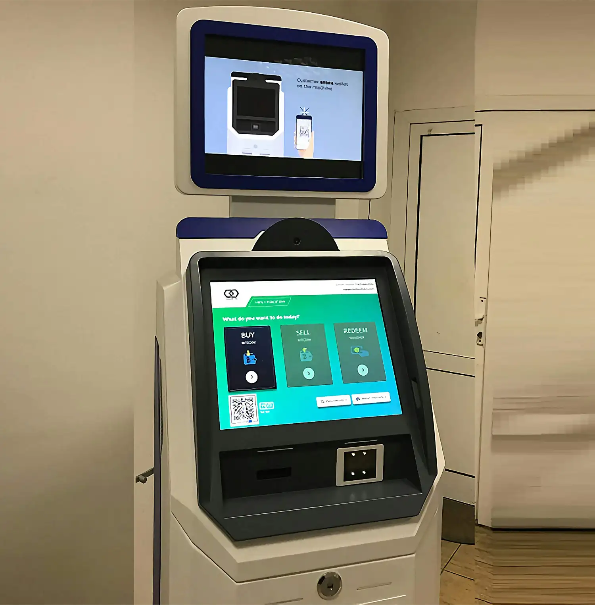

Comprehensive artificial intelligence services engineered for acute care hospitals, diagnostic networks, and remote health teams. Eliminating documentation fatigue while driving faster triage.
Six specialized medical technology pillars designed to integrate seamlessly into existing EHRs, bedside monitors, and lab networks.
 Ambient AI
Ambient AI
Automatically records, contextualizes, and drafts SOAP notes, prescriptions, and ICD-10 codes in real-time during patient examinations.
 Computer Vision
Computer Vision
High-precision neural networks for automated triage on CT scans, X-rays, MRIs, and 12-lead ECG traces with automated abnormality heatmaps.
 Predictive Cloud
Predictive Cloud
Continuous vitals monitoring that forecasts acute decompensation, septic shock, and cardiac arrhythmia hours before physical onset.
 Connected Care
Connected Care
Encrypted HD virtual consultation suite integrated with continuous cellular wearable telemetry for chronic disease management.
 Surgical Hub
Surgical Hub
Real-time surgical video indexing, instrument tracking, and automated operative record generation directly to hospital billing.
 Precision Lab
Precision Lab
High-throughput automated classification of blood smears, histology biopsy slices, and rapid antimicrobial susceptibility profiling.
Every medical specialty has distinct operational rhythms. Our software modules adapt to your clinical guidelines.

Instantaneous multi-source acuity scoring that flags hidden internal hemorrhages, stroke windows, and respiratory distress upon patient arrival.
Continuous AI monitoring of arterial line waveforms, real-time ST-segment elevation warnings, and automatic ejection fraction estimations.
Matching tumor molecular markers with targeted clinical trial protocols and flagging contraindicating chemotherapy drug interactions.
Specialized pediatric vital ranges and weight-adjusted dosage calculations with non-invasive video-based infant distress monitoring.
Zero rip-and-replace required. We plug directly into your existing enterprise electronic medical records and telemetry infrastructure.

Certified FHIR v4 and SMART on FHIR integration with Epic Systems, Oracle Cerner, MEDITECH, and Athenahealth.

Universal device driver layer supporting Philips, GE Healthcare, Mindray, and Welch Allyn inpatient vitals monitors.

High-throughput real-time ADT, ORU, and MDM message broker processing over 50,000 clinical events per second.

Encrypted data channels with isolated tenant databases, HIPAA Business Associate Agreement, and full SOC-2 Type II audits.
Extending hospital-grade clinical oversight directly into patients' homes to prevent 30-day readmissions.
Pre-configured blood pressure cuffs, pulse oximeters, and glucose monitors that transmit data instantly without requiring patient Wi-Fi setup.
Automated clinical rules engines that detect sudden weight spikes in heart failure patients and dispatch nurse check-ins immediately.
Built-in time-tracking and automated generation of CPT 99453, 99454, 99457, and 99458 billing reports for maximum revenue capture.

Accelerating diagnostic lab throughput with automated machine learning inference.

Computer vision models that segment white blood cell differential counts, detect blast cells, and flag malaria parasites in seconds.

Deep neural classification of Next-Generation Sequencing (NGS) data, prioritizing rare genetic mutations and pharmacogenomic risks.
Predicting optimal antibiotic regimens from optical microscopy growth patterns hours before traditional agar disc diffusion results.
Healthcare infrastructure cannot tolerate downtime. We provide institutional grade reliability and round-the-clock clinical engineering support.
Speak with our medical informatics engineers to design a custom integration plan tailored to your electronic medical records and clinical volume.